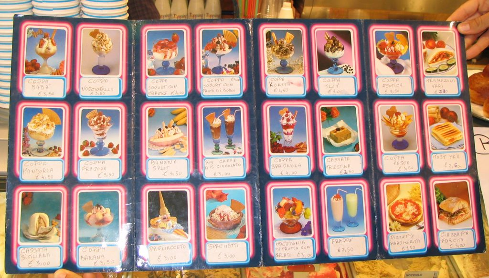

An Italian gelato menu
Did you know that some Italian gelaterie have a menu? If you decide to sit (sedere) at the gelateria table to taste your Italian treat instead of eating it on the go, occasionally a complete ice cream menu will be given to you, and sometimes pictures will help you decide which ice cream will make your day. On the menu you can also find some salty snacks. As you can see, the four "intruders" have been placed on the far right of the page: pizzette, ciabatta farcita, tramezzini vari and 'tost'. Yes, tost. But make no mistake, the spaghetti (last row, fourth from the left) are made of gelato! {This is an excerpt from chapter 4 “Gelaterie and coffeehouses” of the eBook “Italy from the Inside. A native Italian reveals the secrets of traveling in Italy”. Buy our eBook on Amazon and leave us a review! If it's good, you'll make us happy, if it's bad, you'll make us improve. Thank you either way!}